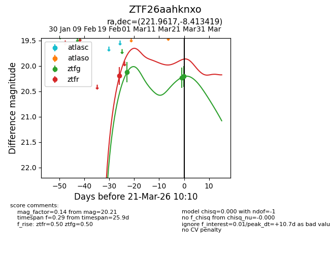
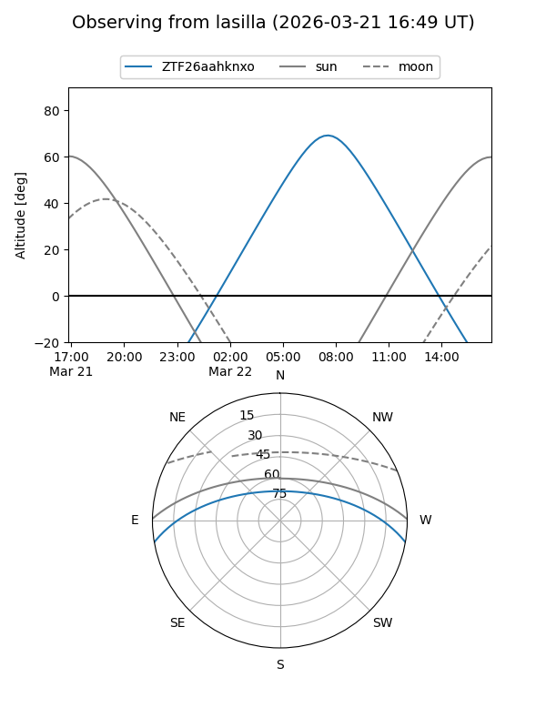
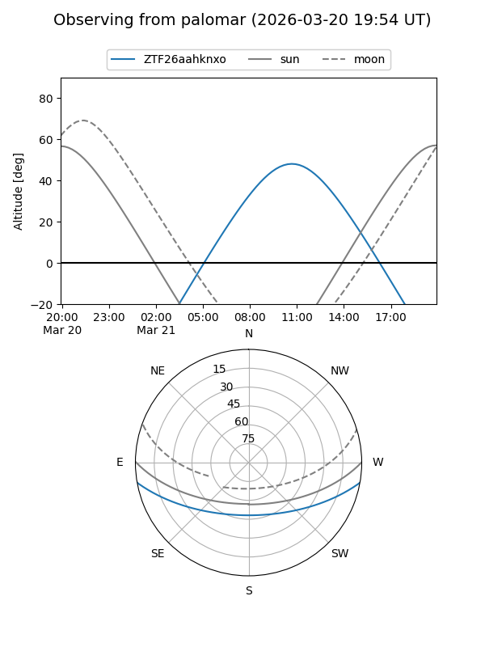
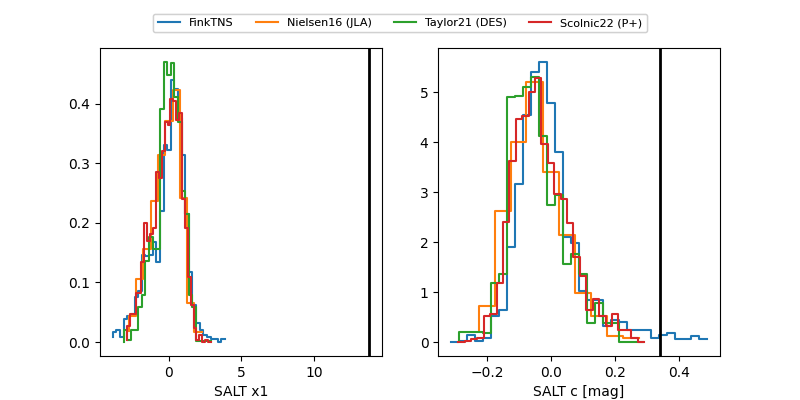

ZTF26aahknxo
Target ZTF26aahknxo at 2026-03-21 10:13
Aliases and brokers:
FINK: link
Lasair: link
ALeRCE: link
alt names
ZTF26aahknxo (ztf,fink_ztf)
Coordinates:
equatorial (ra, dec) = 221.9617,-8.41342
equatorial (HMS+DMS) = 14:47:50.81,-08:24:48.31
galactic (l, b) = (345.4710,+44.63147)
Flags:
Photometry:
last ztfg=20.21, ztfr=20.20
3 ztfg, 1 ztfr detections
Lightcurve

Visibility


Additional plots
